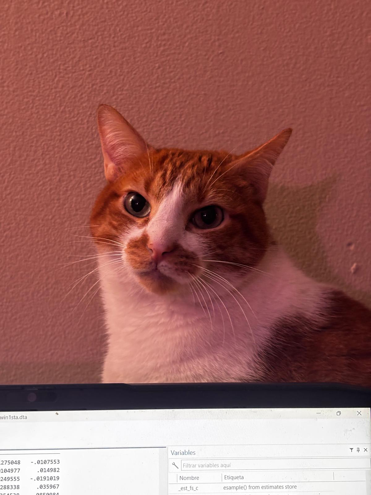
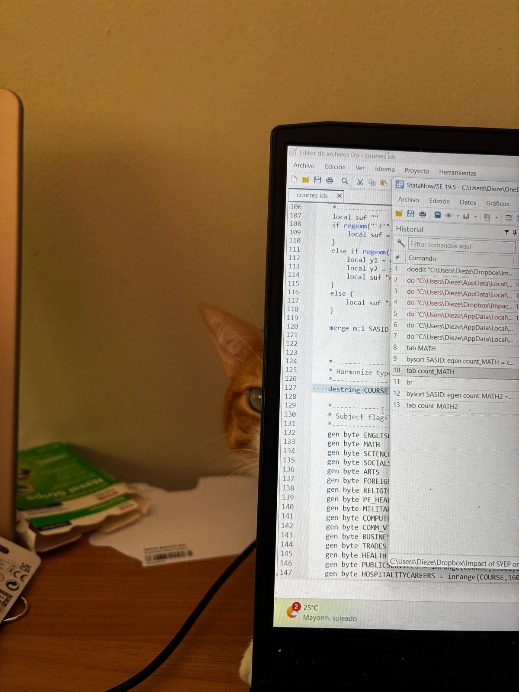
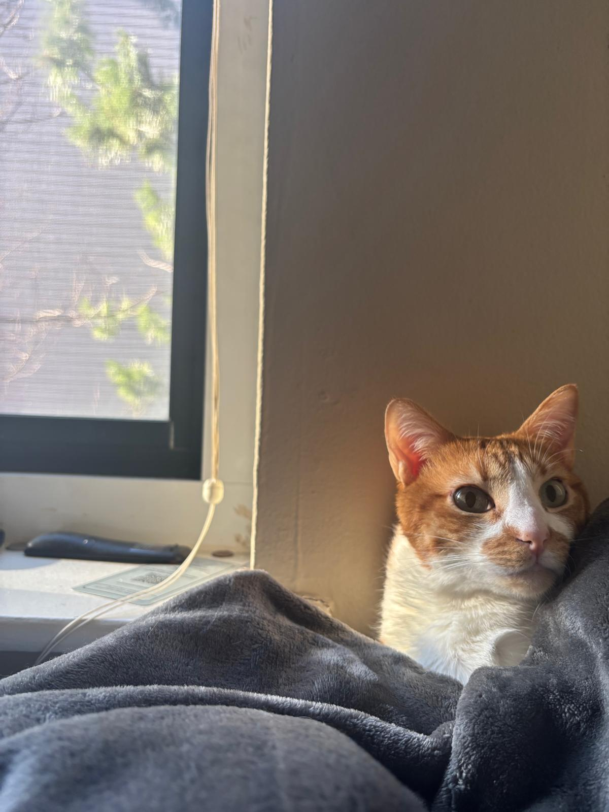

Amelia
Chief of Naps · Professional Supervisor · Emotional Support Animal
about_amelia
research_contributions
While Amelia's name does not appear on any working paper (yet), her contributions to the research process are immeasurable. She has reviewed multiple drafts of literature reviews through the act of sitting on them, provided warm encouragement during late-night writing sessions, and once accidentally deleted a do-file that probably needed to be rewritten anyway.
teaching_philosophy
Amelia believes in learning through observation and strategic napping. Her approach to education is entirely Socratic: she asks no questions, provides no answers, and evaluates all outcomes with equal indifference. Students and professors alike are assessed on the same metric — their ability to provide adequate chin scratches.
boston_survival_guide
Unlike certain PhD students who still haven't fully adapted to Boston winters, Amelia has mastered the art of indoor living. Her strategy: find the warmest spot in the apartment, claim it permanently, and regard all attempts to reclaim it with dignified contempt. This is, arguably, the optimal behavioral response to the Northeast climate.
gallery


